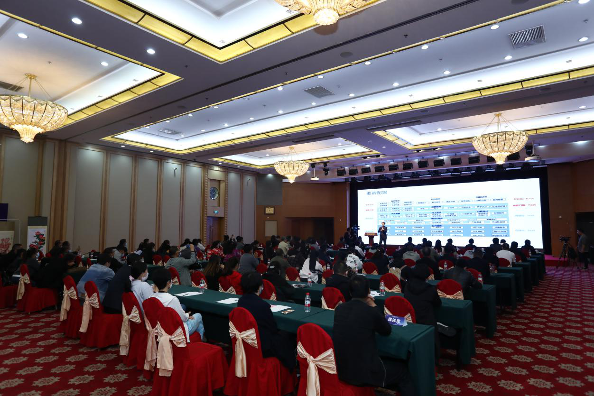
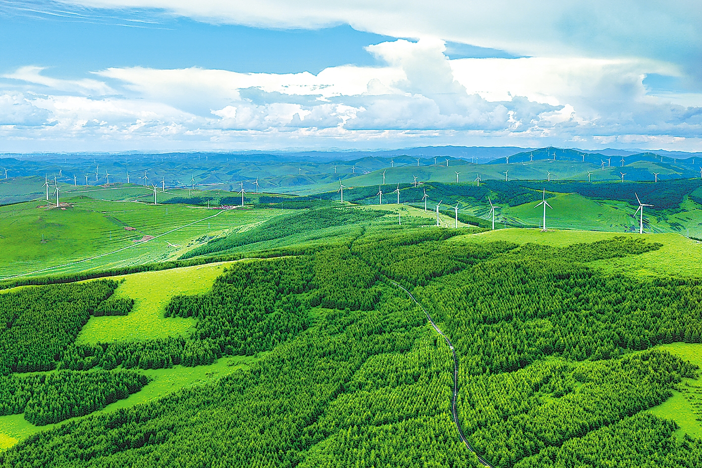
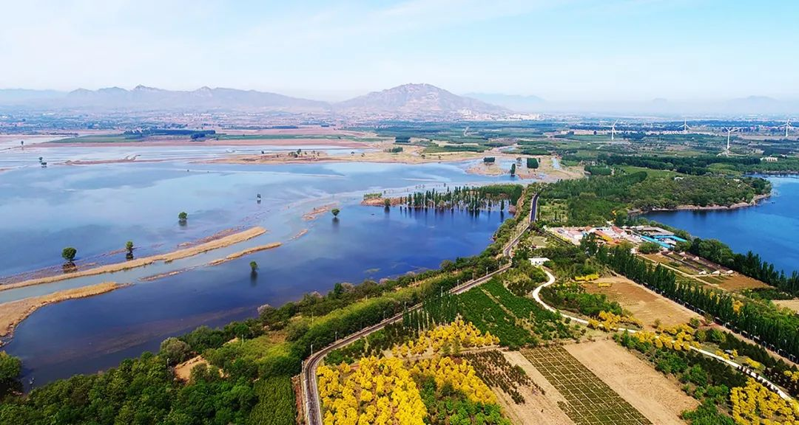

E-commerce Development

Yu County, Zhangjiakou City, Hebei Province vigorously develops e-commerce, builds beautiful villages, and promotes the development of green and organic agriculture, aiming to promote rural economic development and ecological civilization construction. As the place where Yuan Longping, the father of Chinese agronomy, demonstrated thousands of acres of land, Yu County has unique natural and human resources for the development of green and organic agriculture. At the same time, the county is also actively playing the role of e-commerce in rural revitalization, promoting the circulation and economic benefits of agricultural products through online sales. In addition, Yu County is also promoting the construction of beautiful countryside, improving public facilities, road construction and environmental protection, and improving the quality of life of local residents.
Green chemical industrial Park

The establishment of a green chemical industrial park in Chongli District, Zhangjiakou is one of the measures taken by the Zhangjiakou Municipal Government to promote green development, and it is also part of the construction of an ecologically civilized city. The industrial park will be committed to creating an environmentally friendly chemical industry, and realize a circular economy through the collection and utilization of waste water. This model can not only create new economic value, but also help protect the environment and promote sustainable development. As a famous tourist destination, Chongli District is particularly important for environmental protection. The discharge of chemical wastewater is an important part of environmental protection issues, and by establishing a green chemical industrial park, the wastewater can be recycled and the impact on the environment can be reduced. At the same time, the industrial park can inject new impetus into the economic development of the region, create more job opportunities,improve the living standards.
Natural Resource Protection

Zhangjiakou has many beautiful natural landscapes and protected areas. The local government has strengthened the protection of these natural resources and established a series of protection systems, such as ecological restoration, water source protection, and afforestation, to ensure the integrity and aesthetics of the natural ecology. . The government proposes to build "Ecological Zhangjiakou, Green Economy", promote the construction of an ecological city from various aspects such as urban planning, construction, and management, and accelerate the pace of coordination between ecological civilization and economic development.
FROM GROUP1|Liang Jiaxin-Liu Zhuofan-Hu Kaiyi-Dong Zhenzheng-Shu Xiaoyu-Liu Daiyong